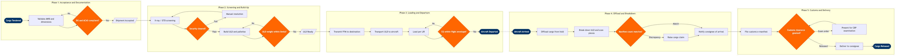

| Step | L4 Step Name | KPI / Target | Pain Point / Risk | Gate |
|---|---|---|---|---|
| 1.1 | Receive cargo booking and AWB data | Acceptance processing time ≤15 min per shipment | Paper-based AWBs delay IATA e-freight compliance; IATA eAWB mandate targets 100% adoption by 2026 but shipper readiness lags at ~68% globally | |
| 1.2 | Validate AWB, weight, dimensions, and piece count | AWB discrepancy rate ≤2%; re-weigh resolution ≤10 min | Weight/dimension discrepancy between booked and actual triggers load plan recalculation in SkyMAX; late changes within 2h of STD cause cascading W&B revisions | ⚠ |
| 1.3 | Screen shipment for dangerous goods compliance | Undeclared DG detection rate = 100%; DG non-compliance rejection logged within 5 min | Undeclared lithium batteries and aerosols remain the #1 air cargo safety risk; IATA DGR 64th Edition tightens Section II battery limits, requiring agent retraining each Jan cycle | ⚠ |
| 1.4 | Submit ACAS pre-screening data for US-bound cargo | ACAS submission ≥4h before departure per 19 CFR 122.48a; CBP response latency typically <2 min | Late ACAS submission or CBP DNL response with <1h to departure forces cargo offload, disrupting finalised load plan and triggering FFM amendment; no automated retry on CBP system timeout | ⚠ |
| 2.1 | Physically screen cargo via X-ray or ETD | 100% of cargo screened before loading per TSA 12-5 CCSF programme; throughput ≥600 kg/h per lane | Dense or opaque shipments (machinery, consolidated freight) require manual ETD swab resolution, creating bottleneck at peak build-up windows (02:00–05:00 for early banks); insufficient overnight staffing at secondary airports | ⚠ |
| 2.2 | Assign screened cargo to flight and ULD position | ULD utilisation ≥85% by volume; assignment issued ≥3h before STD | Last-minute passenger IRROP (flight cancellation/diversion) displaces belly cargo capacity, requiring full re-manifest of 15–40 shipments within 30 min with no automated re-optimisation tool in most legacy CMS configurations | |
| 2.3 | Build ULD, palletise cargo, and apply labels | Build-up accuracy (correct ULD manifest) ≥98%; ULD gross weight tolerance ±0.5% of declared | Manual pallet build without automated real-time feed to weight-and-balance system means errors (overweight, CG shift) are only discovered at aircraft hold door, causing ramp delay averaging 18 min per incident | ⚠ |
| 3.1 | Generate and transmit final cargo manifest (FFM) | FFM transmitted ≥45 min before STD per IATA Cargo-IMP MSG standard; retransmission on amendment ≤5 min | Integration gaps between CMS and PSS mean late passenger rebooking changes (affecting belly payload) trigger manual FFM amendments; automated reconciliation missing in non-NDC-integrated stations | |
| 3.2 | Transport ULDs and bulk cargo to aircraft ramp | Cargo at aircraft ≥30 min before STD; ramp vehicle utilisation ≥80% | Airside congestion at hub airports (multiple simultaneous narrow-body turns) causes sequencing conflicts between cargo dollies, fuel bowsers, and catering trucks; no real-time airside traffic management at most regional stations | |
| 3.3 | Load cargo into aircraft hold per load instruction report | Loading completion ≥15 min before STD; W&B CG deviation ≤2% of planned; LIR sign-off accuracy 100% | Bulk cargo dimension inconsistencies discovered at hold door during loading trigger manual re-sequencing; Jeppesen LoadPlanner does not auto-update when actual weights deviate >50 kg from planned, requiring crew notification and possible taxi-back | ⚠ |
| 4.1 | Offload cargo from arriving aircraft hold | ULD offload complete ≤35 min after chocks-on; bulk hold clear ≤25 min | Combi aircraft and wide-body mixed-class configurations require sequential hold access, extending ground time; misrouted ULDs from origin (wrong station label) discovered only at offload, requiring urgent re-manifest and re-tender | |
| 4.2 | Break down inbound ULDs and scan all pieces | Breakdown and scan complete ≤60 min after offload; discrepancy rate ≤1%; cargo claim initiation ≤15 min of confirmed shortage | ULD damage (torn nets, cracked pallets) discovered at breakdown delays customs release and inflates cargo claims cost; CHAMP exception workflow requires manual supervisor override, adding 20–45 min to resolution when supervisor unavailable overnight | ⚠ |
| 4.3 | Transmit arrival notices to consignees and forwarders | Arrival notice sent ≤2h after breakdown; automated AN rate ≥95% of AWBs with complete contact data | Incomplete or missing consignee contact data in AWB (common with e-commerce fulfilment shipments) prevents automated notification; manual agent intervention required, increasing dwell time and risk of exceeding free storage period | |
| 5.1 | File customs entry and e-manifest for inbound cargo | Customs pre-clearance filing ≥2h before aircraft arrival per EU ICS2 and CBP advance cargo rules; entry acceptance rate ≥97% | Incomplete commercial invoices from e-commerce shippers (missing HS codes, undervalued goods) cause customs holds and demurrage charges; ICS2 Phase 3 (2024) adds 6-digit HS code mandate that many SME shippers are not yet compliant with | ⚠ |
| 5.2 | Present cargo for customs physical examination if selected | Cargo presented at examination bay ≤4h of exam order; examination completion ≤8h for non-complex shipments | Random and targeted exam selection (10–15% of shipments at major US gateways) creates unpredictable delay and bonded storage cost; no SLA from CBP on exam completion time, causing consignee escalations and missed just-in-time delivery windows | |
| 5.3 | Release and deliver cargo to consignee upon clearance | Dwell time ≤24h for general cargo; ≤4h for perishables and pharmaceuticals (IATA CEIV Pharma benchmark); delivery receipt accuracy 100% | Free storage period expiry (typically 24–48h depending on carrier tariff) triggers demurrage charges averaging $0.50–$1.50/kg/day; consignee no-shows spike on weekends and public holidays without automated SMS/email reminder integration in CHAMP delivery module | ⚠ |